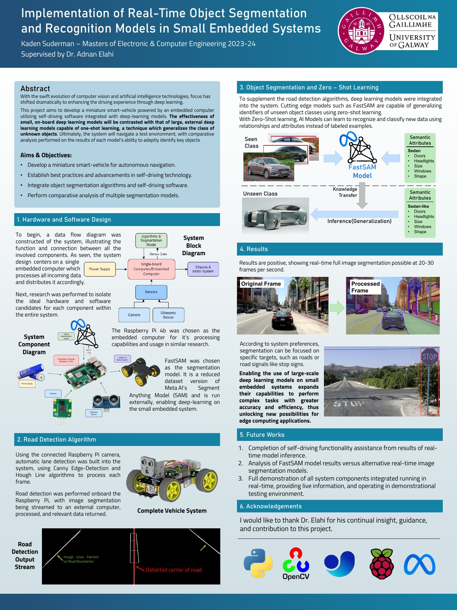

Why hybrid inference
Small on-device models are dependable without a network. Remote inference makes larger segmentation models practical when the connection and latency budget allow it.
Project 06 · Master's project
A small autonomous vehicle used to test which perception tasks can run on a Raspberry Pi and which are better served by a remote GPU.
Project poster
Road boundaries and vehicle control stay close to the hardware. Larger segmentation models run externally and return scene information.

System split
Small on-device models are dependable without a network. Remote inference makes larger segmentation models practical when the connection and latency budget allow it.
The work covered perception, motor control, embedded hardware, networking, and the integration problems between them.
Model accuracy is only one system variable. Frame rate, round-trip latency, failure behavior, and deployment complexity decide whether the full product works.
View the implementation ↗